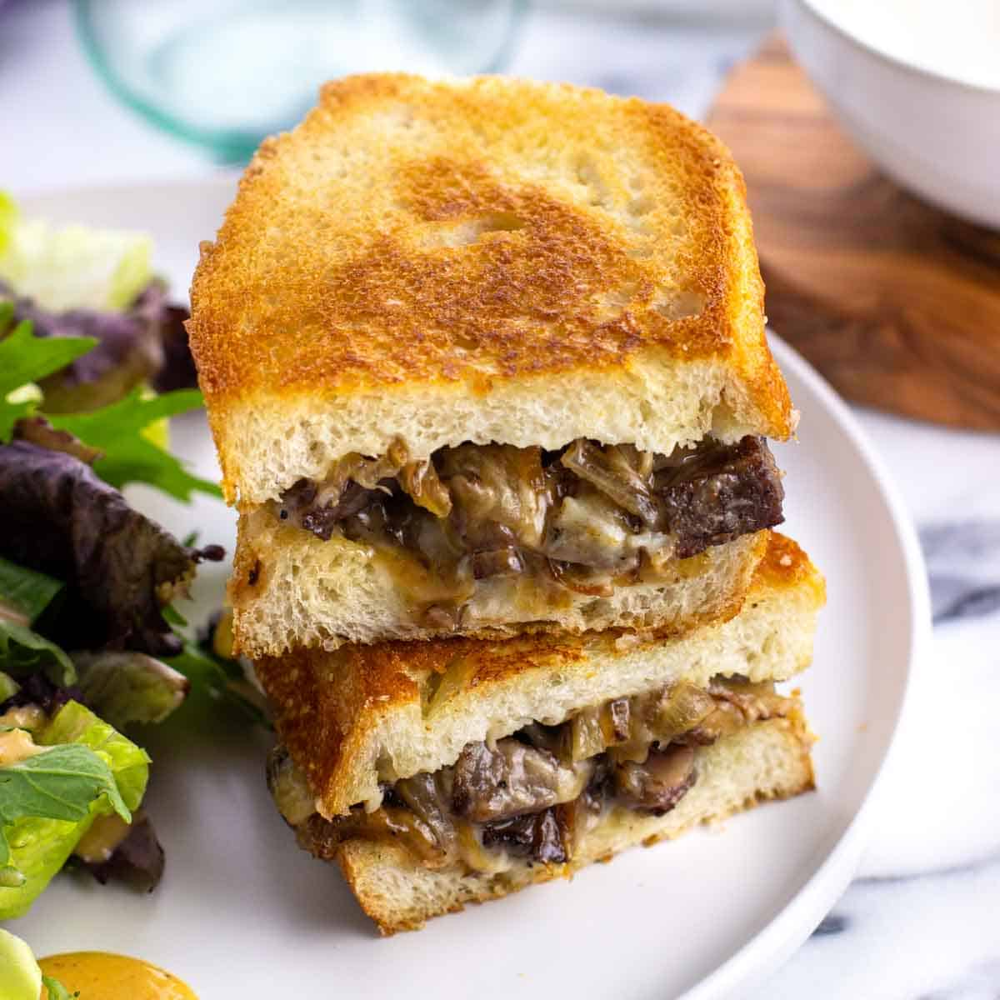

Steak Sandwich

This Steak Sandwich is perfect for lunch or quick dinner on the go!
INGREDIENTS
- (4)oz Thin Sliced Steak
- (2) Slices of Favorite Bread
- (1/2) Small Onion, Sliced
- (1)oz Sliced mushrooms of your choice
- (2) Slices of Provelone Cheese
- (1) Tbsp Garlic Aoli
- (1) Tbsp butter
- Salt & Pepper to taste
DIRECTIONS
- Melt half of the butter in cast iron pan on medium heat
- Sautee onions and mushrooms until soft. Remove and set aside
- Season steak with salt and pepper, add to hot pan
- Cook steak until heated through
- Spread garlic aoli on inside of one slice of bread
- Put steak, mushriooms, onions, and both slices of cheese inside of bread
- Melt remaining butter in pan, add sandwich and toast until golden brown
This recipe is like a grilled cheese with lots of extras. Works great with leftovers from Elk Steak
Enjoy!